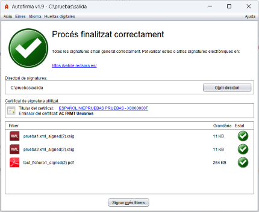

Després de finalitzar una operació de signatura, es mostra una pantalla amb informació sobre el resultat de l'operació.

Si es desitja obtindre més informació sobre la signatura, es pot polsar en l'enllaç Detalls de la signatura i es mostrarà un diàleg amb informació sobre aquesta:
Esta pantalla es divideix en tres seccions:
Informació sobre el fitxer signat o el directori d'eixida
Es mostra la ruta completa del fitxer signat (pot copiar esta ruta polsant sobre ella amb el botó dret del ratolí) o la del directori d'eixida. Si es va realitzar la signatura PAdES d'un document PDF, es mostrarà un botó per a obrir el document signat amb l'aplicació predeterminada en el sistema.
Informació sobre el certificat utilitzat per a realitzar les signatures
És possible veure el certificat (mitjançant l'aplicació predeterminada del sistema operatiu) polsant en els enllaços.
Informació detallada sobre la signatura o conjunt de signatures realitzes
En el cas de signar un document, es mostren almenys els següents punts mitjançant una estructura d'arbre:
Per a desplaçar-se entre els elements de l'arbre es poden usar els cursors del teclat.
En cas d'haver signat múltiples fitxers, es mostrarà un llistat amb els fitxers generats, la seua grandària i resultat. En el cas de les signatures que no s'hagen pogut generar, es mostrarà la ruta del fitxer d'entrada. Pot fer doble clic sobre una de les signatures del llistat per a accedir a la seua informació detallada.